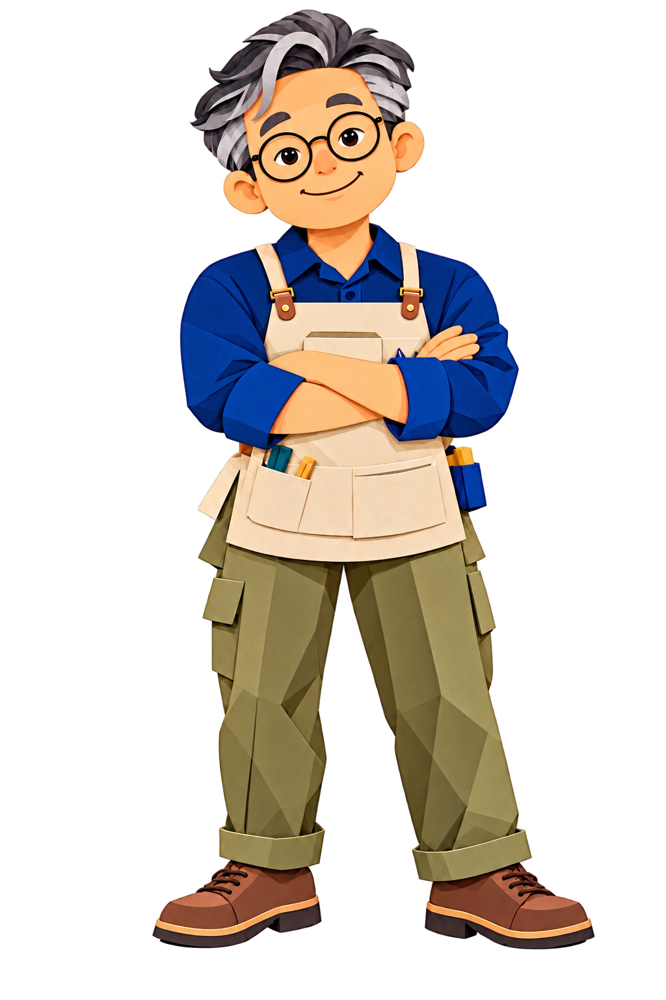

제작 인프라 기반 마련
테크숍 구축지원 사업을 바탕으로 3D프린터와 스캐너 등 제작 장비를 구축했습니다.
경남대학교 3D창의공작센터
디지털 제작을 배우고, 직접 설계하고, 손으로 완성하는 경험.
대학의 교육 역량과 제작 인프라로 배움과 도전을 연결합니다.

3D창의공작센터는 경남대학교의 메이커 교육과 제작 활동을 연결하는 공간입니다. 3D 제작 및 Blender 교육과 디지털 공작 장비 활용을 지원하고, 창원 지역 진로교육에도 참여합니다.
학생뿐 아니라 지역 청소년과 일반인을 위한 메이커 교육, 시제품 설계·제작 지원으로 활동 영역을 넓혀왔습니다. 처음 제작을 배우는 과정부터 아이디어를 구체화하는 단계까지, 필요한 지원을 센터와 상담해 보세요.
공식 센터 업무 안내 ↗테크숍 구축지원 사업을 바탕으로 3D프린터와 스캐너 등 제작 장비를 구축했습니다.
메이커스페이스 구축·운영사업을 통해 교육과 제작 지원의 기반을 넓혔습니다.
지역 기관과 연계해 제조창업과 창의적 인재 양성을 지원하는 협업에 참여했습니다.
대학의 교육과 지역의 수요를 잇는 메이커 활동.
3D 제작과 Blender 교육을 통해 디지털 설계 역량을 기르는 과정을 운영합니다.
3D프린터와 레이저 가공 등 제작 장비의 활용을 지원하고 아이디어의 설계·제작을 돕습니다.
학교와 지역사회에 메이커 경험을 나누고, 진로교육과 창의적 체험 활동을 연결합니다.
프로그램별 모집 대상과 일정은 공식 공고를 확인해 주세요.
산학협력단 공지 확인 ↗공식 센터 소개에서 확인되는 제작 장비와 활용 분야입니다. 구체적인 장비 종류, 가동 상태, 사용 가능한 재료와 이용 조건은 상담 시 확인해 주세요.
디지털 모델을 입체적인 결과물로 구현하는 제작 과정을 지원합니다.
모델링 · 출력 · 제작레이저 커팅 장비를 활용한 디지털 가공과 제작 활동을 지원합니다.
디자인 · 가공 · 조립실물의 형태를 디지털 데이터로 다루는 3D 제작 기반을 마련해 왔습니다.
실물 · 데이터 · 응용제작 아이디어나 배우고 싶은 분야, 준비한 도면·모델이 있다면 함께 알려주세요.
교육 일정, 장비 이용 방법, 준비 사항과 방문 일정을 상담해 주세요.
안전 안내와 장비별 이용 절차를 확인한 뒤 활동을 시작해 주세요.

센터 업무·연혁·교육 활동은 경남대학교 공개 안내를 바탕으로 정리했습니다.
현재 모집 일정과 이용 조건은 공식 공지 또는 센터 문의로 확인해 주세요.